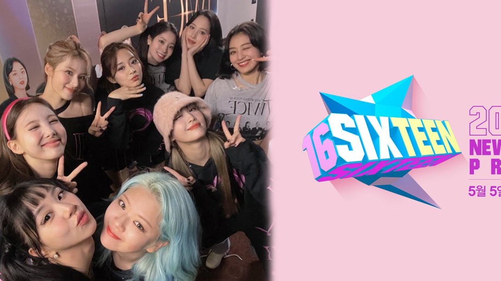

TWICE
TWICE es un grupo femenino surcoreano de K-pop formado por JYP Entertainment que debutó oficialmente el 20 de octubre de 2015.
Novedades

Cheer Up Baby!!!
El segundo mini álbum de TWICE, "Page Two" (lanzado en abril de 2016), es el proyecto que catapultó al grupo al estrellato masivo gracias a su icónico tema principal, "CHEER UP". Con un concepto sumamente colorido, fresco y deportivo, el álbum destaca por su estilo "color pop", una mezcla muy enérgica de dance, pop y hip-hop.
Leer más
¿Cómo Surgió Twice?
En este programa, 16 jóvenes se enfrentaron en batallas extremas de talento y carisma, divididas cruelmente entre el éxito ("Major") y el fracaso ("Minor"). Lo que nadie esperaba fue el caótico giro final: cuando el grupo ya estaba cerrado con siete elegidas, un cambio de reglas de último minuto lo cambió todo, rescatando del descarte a dos integrantes que terminarían siendo la clave de su éxito masivo. Así nació una leyenda.
Leer másDatos importantes

Twice 10 años
TWICE ha celebrado su décimo aniversario con un álbum especial titulado "TEN: The Story Goes On".
Twice en The Tonight Show
Una gran noche.

I wanna Know What Is Love?
Trata sobre la tierna curiosidad de nueve chicas que solo conocen el amor a través de los libros y las películas, y se preguntan cuándo les llegará el momento de vivirlo en la realidad.